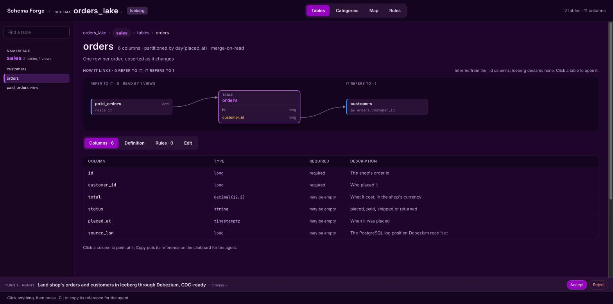

Open source · multi-engine · MCP
SchemaForge is where you and your coding agent design and manage database schemas together, for every database you run: the agent through MCP, you on the canvas, every change checked against your team's rules, nothing landing unchecked. Each database is an engine plugin, so a schema converts from one engine to another, and everything known about it is stored with it.
Being built in the open, every database a plugin.Why SchemaForge
Every engine maps its database once into one shared model and Apache Arrow's types. So a schema moves from MySQL to PostgreSQL, from PostgreSQL to Iceberg, or back, as one step through the hub, never a converter per pair. Every move names each type kept, widened, approximated or lost, and a new engine converts to all the others the day it arrives.
How conversion works →What depends on what, what each object means, what breaks your rules: worked out from the schema and kept beside it in the same PostgreSQL, with the embeddings to find it by meaning. You and your agent ask in plain words, and one SQL query searches by meaning, structure and lineage at once.
How it is stored →Work any way you like
Start a new schema for the engine you choose and design it on the canvas, every change checked against your rules as you make it.
Read in a database (a dump, its DDL or the live server) and get its whole design back, with what depends on what and what is wrong with it.
Ask your coding agent for a design and work on it side by side: it changes the schema through MCP while you edit, point at things and steer.
Hand the agent the job and watch every change land on the canvas, then accept or reject its turn whole.
On one schema, at any time: start from an existing database, convert it to another engine, redesign it with your agent, and keep everything it learned about the schema.
What it does
Your coding agent changes the schema through MCP, one checked operation at a time, and every change lands on the canvas at once. Its changes for one prompt form a turn you accept or reject whole.
"Every table has a primary key", "money is decimal, never float": linked before design starts, checked on every change. A hard rule refuses a break; a soft one shows it.
It reads a schema and proposes rules with its evidence; each is verified, then approved by the architect, and enforced from then on.
Across every engine: every type that would be lost, widened or approximated in a move between them is named, with the reason.
Say what a schema has to do ("feed it by CDC", "land PostgreSQL in Iceberg") and see the gap: keys Debezium can follow, identifier fields, merge-on-read.
It reads dumps, hand-written DDL and live databases, works out what depends on what and what is wrong, and keeps exactly as written whatever it does not model.

prototype tag.Every database a plugin
The canvas, the MCP, the rules and the store know no database. Each database is an engine: one crate with its versions, types, options, readers and writers, and its own tables. How engines plug in, with Apache Iceberg as the example →
Dumps, hand-written DDL and the live server read; every kind of object and clause written back, loading into MySQL 8.0 to 26.10.
Each an engine of its own, with its own tables, checked by the same conformance kit; then converting a schema between them.
An engine is one crate: its grammar, types and catalogs, and its own tables. Adding one needs no change to the core.
How it works
-- a sketch of the planned insight layer: tables about billing that refer to customers
SELECT o.name, d.kind, d.from_object AS used_by
FROM cortex.objects o
JOIN insight.embeddings v ON v.subject = o.id
LEFT JOIN insight.dependencies d ON d.to_object = o.id -- what reads or writes it
WHERE EXISTS (SELECT 1 FROM cortex.relationships r
WHERE r.from_object = o.id AND r.to_object = 'o_customers')
ORDER BY v.vector <=> embedding('tables about billing') -- pgvector: by meaning
LIMIT 10;
Meaning is found with embeddings from a model you choose: one that runs on your machine, so nothing leaves it, or an embedding API you pick, per workspace. Reading a live database sends only statements that read; no password is ever stored.
The database itself enforces every rule, the search index sits beside the design, and the same code serves a team server. The cost: a larger download, a small private server per open workspace, and upgrades the app handles for you.
Atlas, Bytebase and Flyway plan and apply migrations; dbdiagram and drawDB draw diagrams; Prisma defines a schema in application code. SchemaForge is for designing and managing the schema itself, with your own agent, under rules the database enforces. More
A collaborative learning exercise
SchemaForge is built in the open, the way it asks you to work: each piece of work is written down first as a task; one agent builds it; tests and a person's review decide; every lesson improves the method. Point your agent at the project and it will show you what is open now. Anyone can take up the same task, and the best build is merged.
SchemaForge · MIT or Apache-2.0GitHubDiscussionsFor coding agents: the brief, agents.xmlGenerated by docs/pages/build.py from the repository: the files are the authority.